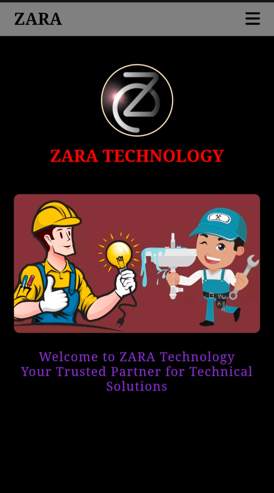

PROJECTS
Here are a few projects I have created while learning full-stack development.
INTERACTIVE PETS STORIES WEBSITE (FRONTEND)
- Developed a responsive web application using HTML, CSS, and JavaScript to create an engaging user interface for displaying pet stories.
- Implemented dynamic content loading and ensured an appealing user experience across various devices.
ZARA TECHNOLOGY – Client Project
- Designed and developed a responsive technology services website.
- Implemented cross-device compatibility using HTML, CSS, and JavaScript.
- Delivered within the client’s requirements and timeline.

ATM TRANSACTION SYSTEM
- Created a Python program simulating core ATM operations (secure user access, balance management, transaction types).
- Focused on practical application of fundamental Python statements and methods, incorporating robust input validation for real-world problem-solving.

ONLINE FOOD ORDERING SYSTEM
- Developed a comprehensive python program for online food ordering, including menu selection, order processing, and automated bill generation.
- Utilized fundamental Python statements, functions, and modules, with file handling for efficient record-keeping.